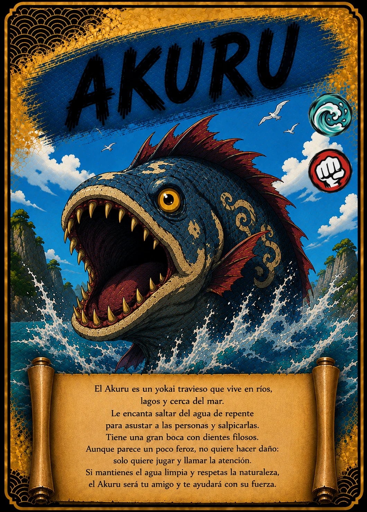

↗ Tocá la carta para verla en grande
EL ÁLBUM TAIKARDS · CARTA 02 / 48
AKURU
Una sorpresa entre las olas
- Naturaleza / elemento
- 💧 Agua
- Tipo
- 👊 Ataque
📖 Te cuento mi historia
¡Splash! Una enorme boca aparece entre las olas. Es Akuru, el habitante del agua que en TAIKARDS disfruta de los juegos y las salpicaduras. Su aspecto puede impresionar, pero esta versión quiere llamar la atención y encontrar compañeros de aventura. Su carta nos invita a cuidar los ríos, los lagos y el mar: un hogar limpio es un regalo para todos sus habitantes.
Versión infantil basada en la carta de TAIKARDS. Sus personajes y aventuras pueden ser diferentes de las leyendas tradicionales. La naturaleza y el tipo corresponden a la clasificación del juego.
← Volver a todas las cartas